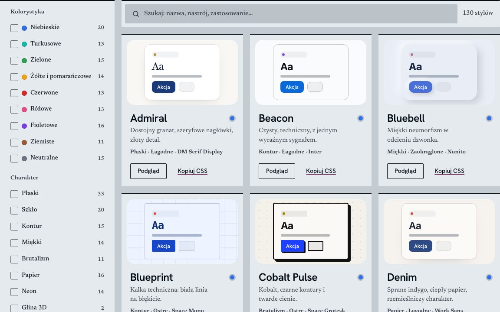

Style: katalog i generator stylów interfejsu
Aktualny projekt, w trakcie rozwoju. Część tej strony: HTML, CSS i JavaScript bez frameworków.
- Katalog 120 systemów wizualnych z paletą dla trybu jasnego i ciemnego, filtrowaniem po kolorystyce, materiale, kształcie i typografii.
- Generator własnych stylów z automatyczną korektą kontrastu WCAG 2.2 i podglądem na 21 interaktywnych widżetach.
- Eksport stylu do pliku .css oraz opisu .md dla asystentów AI.
- Przykładowe strony-wizytówki dla 16 branż, które można obejrzeć w każdym stylu.